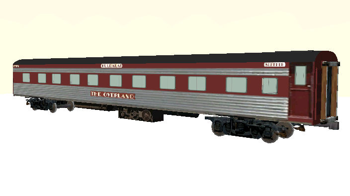

V&SAR / V&ANR The Overland Express Passenger Train
3d models original design and textures by Russell Beer
V&SAR textures by Allan Lownsborough
Overview
There are thirty-eight carriages in the package: nineteen each in V&SAR and V&ANR liveries:
- Sleepers- Allambi, Chalaki, Nankuri, Purpawi, Tantini, Kuldalai, Malkari, Mokai, Tawarri, Yankai;
- Economy Class Sitting Coaches - 1BJ, 2BJ, 6BJ, 7BJ, 9BJ;
- First Class Sitting Coaches - 1AJ, 2AJ;
- Baggage Car - CO1, CO2
